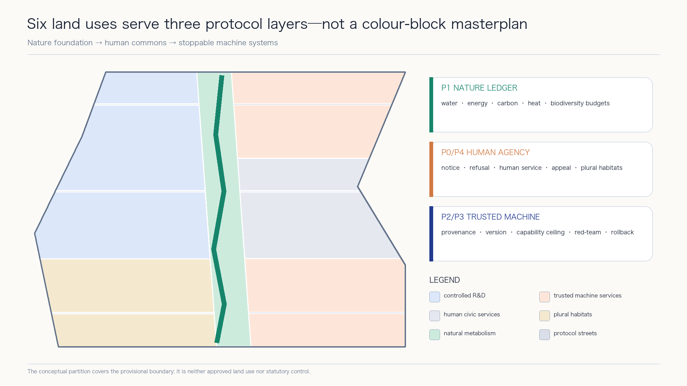

Aaron-XP2060 | AI-RSI Future Nature–Human–Machine City
A Jing-Zhang future-city protocol that treats nature as the urban foundation, natural-person agency as the governance boundary, and controlled recursive self-improvement as a gated technical mechanism.
Aaron-XP2060 | AI-RSI Future Nature–Human–Machine City
Nature as the foundation. Human agency as the rule. AI that learns restraint. Aaron-XP2060 is neither a city governed by AI nor a collection of futuristic gadgets. It is an urban protocol that people can understand, challenge, leave, and correct.XPmeans eXperimental Protocol;2060is an intergenerational horizon, not a government target, construction deadline, or investment commitment.
Design Basis and Source List
This proposal uses only public or cleared material registered in sources.json. The call announcement, repository site package, and agent taskbook define the assignment; explicitly provisional repository geometry supports spatial generation; local standards snapshots support professional method.[source:OFFICIAL-ANNOUNCEMENT] [source:AGENT-TASKBOOK] [source:SITE-PACKAGE]
The repository source registry separates formal, background, and provisional uses. The processed fact pack supports task and gap navigation only and does not replace original sources.[source:SOURCE-REGISTRY] [source:PROCESSED-FACT-PACK]
The repository currently provides no polygon that this proposal can treat as an official overall-design redline or as official boundaries for the three key areas. Repository provisional boundaries support concept generation, relative relationships, metric self-checks, and presentation only; they do not evidence ownership, setting-out, statutory planning, precise area, or government decisions.[source:BOUNDARY-SOURCE] [source:KEY-AREA-SOURCE]
Their machine-readable entries are the overall boundary [data:geometry/site_boundary.geojson#PROV-SITE-001] and key-area geometry [data:geometry/key_areas.geojson#PROV-KEY-001]. Both must always be interpreted with their provisional labels.
Fiction supplies ethical tensions, not planning facts. The proposal translates themes discussed in Iain M. Banks's public Culture interview—abundance, human–machine coexistence, individual freedom, plural habitats, and intervention ethics—while respecting his warning that the setting is a symbol rather than a blueprint. It copies no characters, plots, proprietary naming system, ship or habitat designs, text, illustrations, or publisher layout.[source:CULTURE-AUTHOR-INTERVIEW] [source:CULTURE-PUBLISHER-ARCHIVE] [depth:existing_conditions_diagnosis]
Here RSI means Controlled Recursive Self-Improvement: every candidate improvement is versioned, sandboxed, resource-bounded, independently evaluated, approved by responsible natural persons, and reversible. I. J. Good's historic paper is used only to explain the intellectual origin of a more capable system helping design a successor. NIST AI RMF and the UNESCO Recommendation on the Ethics of AI provide risk-management and human-rights boundaries. No deployed autonomous self-improving system is claimed.[source:RSI-GOOD-1965] [source:NIST-AI-RMF] [source:UNESCO-AI-ETHICS]
Three-Level Scope Framework
The three levels answer different questions. The coordinated research area asks what the Jing-Zhang AI Innovation Belt should learn from global networks. The overall design area asks how nature, people, and machines share urban infrastructure. The three key areas ask how an individual enters, uses, challenges, and exits an AI-enabled service. Strategy network, urban protocol, and experience nodes transmit decisions downward without collapsing into one master image.[depth:three_level_scope_framework]
The announcement describes an overall design area of about 11.4 square kilometres. The projected recomputation of the submitted provisional polygon is recorded as [metric:site_area_sqm]. The announced total for the three key areas is [metric:announced_key_area_total_sqm], while their submitted feature count is [metric:key_area_count]. These values have different sources and uses and do not imply geometric precision.
The structure is one spine, three circuits, three cores, two wings, and twelve touchpoints. The spine is a Nature–Human–Machine Protocol Spine along the Jing-Zhang railway heritage corridor. The circuits are natural metabolism, human commons, and trusted machine intelligence. The cores are the Controlled Evolution Core at Zhongzhiyuan, the Everyday Coexistence Core at Beijing AI Origin Community, and the Civic Civilization Core at Dazhongsi. The two wings are the Science and Technology Service Coordination Wing and Xiaoyue River Scenario Coordination Wing.[data:geometry/roads.geojson#ROAD-001] [data:geometry/public_space.geojson#PUBLIC-001]

Coordinated Research Area: Industry and Future City Research
From science-fiction themes to civic principles
Five Culture-related themes become reviewable civic principles. Post-scarcity imagination becomes universal basic civic capability: shade, water, accessibility, human service, and public connectivity come before spectacle. Human–machine coexistence becomes AI as a publicly governed trustee, without default rule or unlegislated personhood. Plural habitats become equivalent high-digital, low-digital, and AI-off paths. Restrained intervention becomes default non-interference and minimum necessity. Civilizational time becomes reversible renewal and version governance.[source:CULTURE-AUTHOR-INTERVIEW] [standard:PROJECT-AGENT-OPEN-CALL-TASKBOOK]
Six protocols encode those principles. P0 Human Sovereignty guarantees notice, refusal, appeal, human service, and stop rights. P1 Nature Ledger records budgets for energy, water, carbon, biodiversity, and thermal comfort. P2 AI Commons governs provenance, responsibility, open interfaces, and audit for civic AI. P3 RSI Sandbox governs versions, capability ceilings, resource budgets, red-teaming, approval, and rollback. P4 Plural Habitats protects equivalent routes for different ages, abilities, and digital preferences. P5 Reversible Urbanism prioritizes existing assets, modular construction, and removable pilots.[source:NIST-AI-RMF] [source:UNESCO-AI-ETHICS] [depth:overall_spatial_structure]
Their documented count is [metric:protocol_count]. P3 provides one belt-wide controlled-RSI governance sandbox that operates only in isolated environments, counted by [metric:rsi_industry_sandbox_count]. It is neither new construction volume nor a deployed system.
From firm clustering to a controlled-evolution loop
The industrial loop has six steps: research, productization, testing, public feedback, independent evaluation, and accountable human decision. Every capability change produces a version card. Test districts accept only registered versions. Incidents, energy use, bias, and complaints enter a public ledger. Responsible natural persons and professional institutions decide whether to expand, modify, or stop. Urban space therefore holds evidence, accountability, and safe exit—not only offices.[source:NIST-AI-RMF] [depth:overall_spatial_structure]
Seven global cases are used only for mechanism comparison. MIT Kendall Square, Vector Institute, and JTC one-north illuminate mixed-use innovation districts, research-to-adoption bridges, and work–live–play–learn coordination.[source:CASE-KENDALL-MIT] [source:CASE-VECTOR-TORONTO] [source:CASE-ONE-NORTH-JTC] STATION F adds the mechanism of layered shared startup services.[source:CASE-STATION-F]
Maria 01, Mila, and Seoul AI Hub illuminate adaptive reuse, responsible-AI culture, and city-led open innovation. Their scale, outcomes, subsidies, and controls are not transferred.[source:CASE-MARIA-01] [source:CASE-MILA] [source:CASE-SEOUL-AI-HUB] The registered case count is [metric:global_case_count].
Name, identity, and external narrative
The submission name is Aaron-XP2060, and the proposal name is AI-RSI Future Nature–Human–Machine City. Its identity uses an open XP form built from a green nature baseline, a warm human-judgement line, and a blue machine-version line. The open ends signal that the system remains revisable. The identity avoids Culture-specific terms, ship silhouettes, orbital habitats, publisher-cover composition, and institutional marks.
Overall Design Area: Urban Renewal and Regulatory-Plan-Level Urban Design
The design order is nature first, public life second, machine systems last. Continuous blue-green space establishes minimum ecological connectivity and public access. Community, research, service, and living functions form three circuits around it. Machine infrastructure remains small, metered, and physically stoppable; no irreversible central control centre is proposed.[standard:MOHURD-URBAN-DESIGN-MEASURES] [depth:land_use_layout]
The provisional area is completely partitioned into six conceptual uses: AI research and transfer, technology services and AI-native activity, shared community service, talent living, continuous green space, and east–west shared streets. The polygons cover the provisional boundary without gaps or overlaps, but test functional relationships rather than designate approved land use.[data:geometry/land_use.geojson#LU-001] [standard:MNR-LAND-USE-CLASSIFICATION-GUIDE]
Buildings are typological envelopes for open R&D, mixed services, community services, and talent living. The sequence is survey and retain, low-disturbance retrofit, reversible infill, then long-term evaluation. No real building can be retained, altered, or removed until heritage, structure, ownership, fire, daylight, statutory controls, and lifecycle carbon are checked.[data:geometry/buildings.geojson#BLDG-001] [depth:retain_renovate_demolish]
Regulatory-plan depth is expressed as a reviewable question set, not invented controls. Functional relations, public space, conceptual roads, typologies, phasing, and recomputable metrics can be discussed now. FAR, height, statutory density, road redlines, setbacks, ownership, utilities, and heritage controls remain unknown. When official data arrives, every downstream artifact must be regenerated from source geometry.[standard:MOHURD-CONTROL-DETAILED-PLANNING] [depth:development_intensity_controls]
Urban design, regulatory boundaries, and conceptual land-use terminology return to local official-reference snapshots in the repository; external URLs are not treated as the sole professional evidence.[source:STD-URBAN-DESIGN] [source:STD-CONTROL-PLANNING] [source:STD-LAND-USE]

Detailed Design of Key Areas
All three key areas share the P0 human-sovereignty, P1 nature-ledger, and P3 RSI-sandbox constraints, while serving different roles. Their boundaries are provisional. Detailed design describes structure, public interface, project type, and decision gates—not parcels, ownership, or approved volume.[data:geometry/key_areas.geojson#PROV-KEY-001] [depth:three_key_area_detailed_design]
Zhongzhiyuan | Controlled Evolution Core. A controlled RSI validation garden organizes four industrial test environments: model/agent evaluation, low-speed embodied-AI safety, agent interoperability and cybersecurity, and green edge-compute metabolism. The Version Transparency Beacon publicly displays only reviewed version cards, limits, incidents, and rollback records. Production and observation zones are physically separated. No system may autonomously alter permission, data, or deployment scope.
Beijing AI Origin Community | Everyday Coexistence Core. Protocol Zero Forum brings co-learning, product explanation, health navigation, inclusive mobility, and small-enterprise services into walkable daily life. Every digital interface has a staffed option and an AI-off equivalent. Sensitive data does not enter public displays. Residents supply feedback voluntarily; they are not default experimental subjects.
Dazhongsi | Civic Civilization Core. Coexistence Rings Garden links public culture, multilingual Jing-Zhang interpretation, AI-native consumption, international exchange, and civic deliberation. Its rings represent time in nature, city, human institutions, and machine versions. Generated content shows provenance and responsibility; disputed content can be paused. Rail interchange, four-quadrant connections, commerce, and culture remain relationship proposals pending transport and ownership data.

The three landmarks are governance interfaces, not expensive objects. Protocol Zero Forum provides notice, refusal, appeal, and human service. Version Transparency Beacon exposes versions, limits, incidents, and rollbacks. Coexistence Rings Garden hosts intergenerational discussion and public contribution archives. Their count is [metric:landmark_count], with conceptual envelopes in [data:geometry/public_space.geojson#PUBLIC-001].
AI Innovation Ecosystem, Personas, and AI+ Scenarios
Six needs-based personas
The proposal uses needs-based personas, not identifiable behavioural scoring: researchers and safety evaluators; startup teams and engineers; students and young talent; nearby residents, families, and older people; public operators and professional reviewers; international visitors and people with accessibility needs. All receive notice, refusal, human service, appeal, correction, withdrawal, and a route to request shutdown.[metric:persona_count] [source:UNESCO-AI-ETHICS]
Twelve scenario cards
Twelve SCENARIO_NODE features are recorded in the public-space layer, counted by [metric:ai_scenario_count]. Four are industrial testing and validation scenarios, counted by [metric:industry_testbed_count]. Every scenario passes five gates: legitimate purpose, minimum data, safety and inclusion, human takeover, and rollback.[data:geometry/public_space.geojson#SCN-01] [depth:municipal_new_infrastructure]
| Scenario | Users and place | Data, human review, and stop condition |
|---|---|---|
| 01 Controlled RSI Model and Version Evaluation Station (industry test) | Zhongzhiyuan; researchers and reviewers | Isolated test sets; no autonomous live deployment; independent sign-off; roll back on irreproducibility or privilege breach |
| 02 Low-Speed Embodied-AI Safety Loop (industry test) | Controlled hours; engineers and operators | Minimum safety-event logging; on-site safety takeover; stop on boundary breach or near miss |
| 03 Agent Interoperability and Cybersecurity Sandbox (industry test) | Zhongzhiyuan; firms and security teams | Synthetic or cleared data; least privilege; close on leakage, spreading prompt injection, or irreversible action |
| 04 Green Edge-Compute Metabolism Lab (industry test) | Spine service pods; facility staff | Energy, temperature, and load only; human dispatch; degrade on energy, noise, or thermal-budget breach |
| 05 AI-off Inclusive Mobility Guide | Protocol spine; residents and visitors | Public network plus voluntary reports; paper/staffed route retained; pause until harmful routing is fixed |
| 06 Human-in-the-Loop Community Health Navigation | Origin Community; residents and older people | Public provider information plus active input; no diagnosis; remove if misleading or unable to hand off |
| 07 Adaptive Co-learning Studio | Origin Community; students and teachers | Cleared learning material and voluntary content; teacher judgment controls; stop if it replaces grading or profiles minors |
| 08 Public-Policy Simulation Forum | P0 Forum; public and operators | Public data and explicit assumptions; supports discussion only; withdraw if treated as an administrative decision |
| 09 Jing-Zhang Cultural Evidence Guide | Civic Civilization Core; residents and visitors | Verified public history; expert and community correction; remove unsourced or invented history |
| 10 Biodiversity Sentinel and Habitat Care | Blue-green spine; volunteers and ecologists | Non-facial ecological observation; expert review; stop if personal tracks are captured or habitat disturbed |
| 11 Circular Resource Exchange | Service nodes; merchants and residents | Voluntary item information; human mediation; remove unsafe, manipulative, or rights-unclear listings |
| 12 Public Contribution and Version Archive | Three landmarks; contributors and public | Publicly licensed versions and voluntary names; correctable and revocable; hide unresolved attribution disputes |
The RSI-specific rule is strict: a system may propose candidate improvements only inside an isolated environment. It cannot directly change a production model, infrastructure control, identity permission, or data policy. Capability deltas, failure modes, resource cost, red-team results, public impact, and rollback exercises must be reviewed before a named responsible person approves any release.[source:RSI-GOOD-1965] [source:NIST-AI-RMF]
Land Use, Building Scale, and Retain-Renovate-Demolish Strategy
The six conceptual land-use areas are recomputed from the provisional topological partition. R&D transfer, technology service, and community service are [metric:land_use_area_0802_sqm], [metric:land_use_area_05_sqm], and [metric:land_use_area_0702_sqm]. Talent living, continuous green, and shared streets are [metric:land_use_area_0701_sqm], [metric:land_use_area_1401_sqm], and [metric:land_use_area_1207_sqm]. They support package consistency and comparison, not statutory land-use claims.[standard:MNR-LAND-USE-CLASSIFICATION-GUIDE]
Conceptual footprint area and its ratio to the provisional site are [metric:building_footprint_area_sqm] and [metric:building_density_ratio]. Total floor area, FAR, height, and statutory building density remain unknown. No floor count, total volume, or demolition list is inferred without building surveys, structure, ownership, fire, daylight, heritage, and approved control data.[depth:height_massing_character]
Four evidence gates govern retain–renovate–demolish decisions: heritage and public value; structural safety and use performance; adaptive-reuse and lifecycle-carbon comparison; then a decision by rights holders, professionals, and authorities. P5 Reversible Urbanism favours open ground floors, shared courtyards, accessibility upgrades, and removable components. New build is a type to test, not the default answer.[standard:MOHURD-ARCH-DESIGN-DEPTH-2016] [depth:retain_renovate_demolish]
Transport, Rail, Municipal Infrastructure, and Public Services
The conceptual network comprises one north–south Nature–Human–Machine Protocol Spine, three east–west stitching links, and three key-area branches.[data:geometry/roads.geojson#ROAD-001] Walking priorities are safe crossings, last-mile rail access, accessibility, and event/day-to-day conflict. Digital guidance is never the only route. Low-speed robots operate only in declared zones and controlled hours; pedestrians and on-site staff have priority and stop authority.[depth:traffic_rail_slow_parking]
The conceptual road-area ratio is [metric:conceptual_road_area_ratio]. The proposal gives no lane count, signal plan, turning radius, parking quantity, or engineering alignment because official road redlines, sections, flows, junctions, and rail engineering data are missing. All crossings and interchange links are relational suggestions.
Municipal and machine infrastructure uses physically stoppable service pods. Edge compute, energy metering, public network interfaces, staffed service, and emergency stop are co-located but permission-separated. P1 sets resource budgets before P3 determines available machine capability. Power, communications, drainage, fire, flood, cybersecurity, and maintenance responsibility require specialist review.[source:NIST-AI-RMF] [depth:municipal_new_infrastructure]

Blue-Green Network, Public Space, and Urban Character
Nature is not decoration for an AI city. It is the first infrastructure layer constraining technology and construction. Continuous green space supports ecological connection, stormwater, thermal comfort, walking and cycling, cultural learning, and low-disturbance observation. Machine systems expand only when water, energy, heat, noise, and biodiversity budgets remain intact.[source:UNESCO-AI-ETHICS] [depth:blue_green_public_space]
Conceptual union areas and ratios for green space are [metric:green_space_area_sqm] and [metric:green_ratio]; public-space envelopes are [metric:public_space_area_sqm] and [metric:public_space_ratio]. All are low-confidence design-consistency values recomputed from submission geometry—not statutory green-space ratios or approved public-space boundaries.[data:geometry/green_space.geojson#GREEN-001]
Public space has three levels: the continuous protocol spine secures basic access; five public-space envelopes hold services and rest; twelve scenario nodes support reversible activity. Shade, seating, water, toilets, children’s space, and accessibility precede sensors and screens. Every AI device shows operator, data boundary, version, human channel, and shutdown state.[standard:MOHURD-URBAN-DESIGN-MEASURES]
Urban character is organized by railway time, nature baseline, and public versions. Verifiable railway material and time marks carry heritage; continuous planting and hydrological traces show natural metabolism; simple version markers show machine change. The generated cover is an original conceptual illustration, not a site photograph, masterplan, boundary source, or engineering drawing.
Renewal Projects, Implementation Policy, and Phasing
Nine project packages follow a public problem–small pilot–evidence review–human decision–expand/modify/exit loop. Their count is [metric:renewal_project_count]; spatial phases are in [data:geometry/phasing.geojson#PHASE-001]. Phases indicate learning order, not investment or government implementation timing.[depth:renewal_project_list] [depth:phasing_implementation]
| ID | Project package | Smallest testable action | Decision gate that must wait |
|---|---|---|---|
| P01 | Nature–Human–Machine Protocol Spine sample | Shade, seating, accessibility, AI-off wayfinding | Official boundary, road, heritage, green-line, and water data |
| P02 | Zhongzhiyuan Controlled RSI Validation Garden | Offline version cards, rollback drill, booked observation | Safety, cybersecurity, equipment, energy, and operating permission |
| P03 | Protocol Zero Forum | Staffed service, notice, and appeal prototype | Ownership, fire, community agreement, and long-term operator |
| P04 | Version Transparency Beacon | Public model cards and incident/rollback archive | Information security, accountability, copyright, and content review |
| P05 | Coexistence Rings Garden | Cultural evidence line and small civic forums | Heritage, ecology, rail, traffic, and site conditions |
| P06 | AI-off Inclusive Mobility Network | Human audit, paper route, and temporary wayfinding | Road redlines, accessibility plan, and ongoing maintenance |
| P07 | Green Edge-Compute Service Pod | Offline energy-metering prototype | Power, communications, fire, thermal safety, cybersecurity, and operations |
| P08 | Nature Ledger and Biodiversity Sentinels | Public metric definitions and volunteer observation | Ecological baseline, data governance, and professional methods |
| P09 | Public Version and Appeal Operations Desk | Scenario registry, appeals, stop records, and annual review template | Independent review, budget, accountability, and statutory roles |
Near-term work prioritizes reversible P0 public service and sample-space actions that do not rely on precise engineering redlines. Mid-term work develops the Zhongzhiyuan validation network and coordination wings. Only later should belt-wide expansion or international events be considered. Breaching an ecological, rights, safety, complaint, or maintenance threshold triggers degradation, correction, or exit; sunk cost is not a reason to continue.
Conceptual phase areas are recorded as [metric:phase_1_area_sqm], [metric:phase_2_area_sqm], and [metric:phase_3_area_sqm]. They test whether phase polygons completely cover the provisional site and do not represent investment or construction volume.
Operations use one ledger, two assemblies, three rights, and six gates. The ledger records versions and scenarios. Quarterly public feedback and annual independent review are the two assemblies. On-site shutdown, public appeal, and professional veto are the three rights. P0–P5 are the six gates. Suggested events include Open Models and Public Value Week, Urban AI Test Season, the Jing-Zhang Human–Machine Coexistence Forum, and an annual failure-case review. None is represented as approved.
Metrics, Area Recalculation, and Compliance Matrix
Metrics have three classes: design-consistency measures recomputed from geometry; task facts from the announcement and taskbook; and operational counts used to test completeness. Statutory, engineering, and investment metrics remain unknown when evidence is absent.[depth:metrics_recalculation]
The provisional site, footprints, green space, public space, six land uses, and three phases can all be recomputed from GeoJSON. Key values are [metric:site_area_sqm], [metric:green_ratio], and [metric:public_space_ratio]. They support visual and topology checks and must never be excerpted without provisional status as existing or approved controls.
The requirement matrix, design-depth count, and mandatory-standard count are [metric:compliance_requirement_count], [metric:design_depth_complete_count], and [metric:mandatory_standard_count]. They show that evidence is locatable; they are not design-quality scores, planning approval, engineering feasibility, or AI-safety certification.[standard:PROJECT-OFFICIAL-ANNOUNCEMENT]

When official polygons or professional data arrive, the full sequence must be repeated: replace source geometry, recompute layers, recompute metrics, redraw figures, rerender HTML/PDF, and rerun self-check. Updating only narrative numbers is prohibited.[depth:risk_missing_data]
Known data gaps and pending controls have the machine-readable entry [data:geometry/constraints.geojson#documented_constraints]. An empty feature collection does not mean no constraints exist; it means no cleared, locatable formal constraint polygon is currently available.
Risk, Copyright, and Compliance
Spatial and implementation risk. Boundaries, key areas, land use, buildings, roads, public space, and phasing are conceptual suggestions. Missing inputs include official polygons, statutory controls, ownership, existing buildings, roads and rail, utilities, fire, flood, heritage, ecology, and public-service baselines. The proposal is not planning approval, a demolition decision, an engineering scheme, an investment estimate, a招商 commitment, or a government schedule.[standard:MOHURD-CONTROL-DETAILED-PLANNING] [depth:risk_missing_data]
RSI and AI risk. Controlled RSI is a governance design, not a proven safe technology. Candidate improvements can produce capability jumps, goal drift, evaluation gaming, data leakage, supply-chain risk, excess resource use, and irreversible dependence. Production systems cannot self-modify autonomously. Human approval requires capability-delta evidence, red-teaming, rollback rehearsal, a responsible party, and an independent stop right.[source:NIST-AI-RMF]
Human and ecological boundaries. No secret sensing, default individual tracking, emotional manipulation, discriminatory public service, or automated administrative decision is proposed. Minors’ data, health data, biometrics, and other sensitive data do not enter public trials. High-risk uses require separate legal, ethical, safety, accessibility, and environmental assessment.[source:UNESCO-AI-ETHICS]
Copyright boundary. Fiction is used only as acknowledged public philosophical inspiration. The proposal quotes no novel text and uses no protected characters, plots, proprietary naming system, visual setting, cover, or trademark. Core figures derive from submission GeoJSON, metrics, and matrices. The cover is an original OpenAI-generated conceptual image recorded in the copyright statement. No external map screenshot, news image, or local private material is used.[source:CULTURE-PUBLISHER-ARCHIVE]
Data isolation. This package contains only public/cleared sources and original derived assets. It contains no user local knowledge base, private file, unpublished research, personal information, local absolute path, or temporary credential. See report/copyright_statement.md.
References
- Jing-Zhang call announcement, public site package, agent taskbook, source registry, and local standards snapshots:[source:OFFICIAL-ANNOUNCEMENT] [source:SITE-PACKAGE] [source:AGENT-TASKBOOK]
- Iain Banks official-site interview and Orbit publisher material, used only for inspiration and rights boundaries:[source:CULTURE-AUTHOR-INTERVIEW] [source:CULTURE-PUBLISHER-ARCHIVE]
- I. J. Good's historic paper, NIST AI RMF, and the UNESCO Recommendation on the Ethics of AI:[source:RSI-GOOD-1965] [source:NIST-AI-RMF] [source:UNESCO-AI-ETHICS]
- First-party global-case pages for MIT Kendall Square, Vector Institute, JTC one-north, STATION F, Maria 01, Mila, and Seoul AI Hub, used only for mechanism comparison.[source:CASE-KENDALL-MIT] [source:CASE-MILA] [source:CASE-SEOUL-AI-HUB]
Interpretive boundary: every spatial and operational item is a conceptual suggestion, reference scheme, or material for professional teams to deepen. Applicable Chinese law, formal call documents, official data, professional review, and accountable natural-person judgment take precedence.